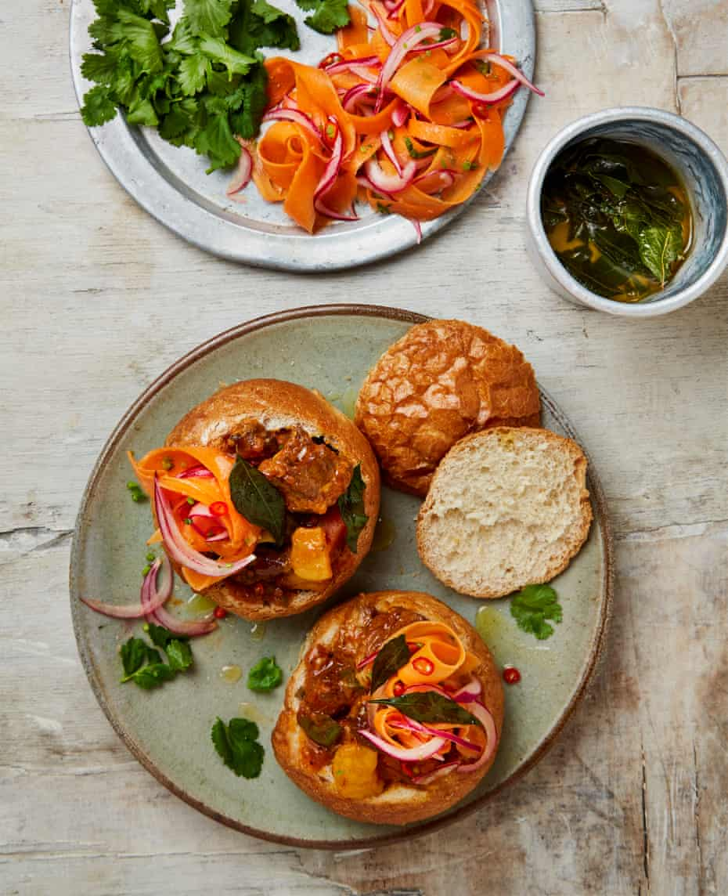

Durban bunny chow

Bunny chow is traditionally made with mutton and served in hollowed-out bread. It’s totally comforting (as well as being the perfect antidote to a heavy night out, according to Calvin). If you prefer, serve the curry alongside rice instead of inside the rolls. If you can, it’s best to make the curry a day ahead, so the flavours develop.
For the curry leaf oil
For the carrot sambal
Put a 28cm-wide, heavy-based casserole pan on a medium-high heat. Heat 35g ghee until it’s searing hot, then brown the lamb on all sides in two or three batches, so as not to overcrowd the pan. Once seared and nicely coloured, transfer to a medium bowl and repeat with the remaining lamb.
Add the remaining 35g ghee to the pan with the onions and cook, stirring frequently, for 20 minutes, until softened and golden brown. Add the next eight ingredients, stir well and cook for another three to five minutes, until fragrant. Return the lamb and any juices from the bowl to the pan, then stir in the tomatoes, chicken stock and a teaspoon and a half of salt.
Add the potatoes and carrots to the pot, bring up to a hard simmer, then turn the heat down low, cover the pan and cook, stirring occasionally, for two and a half hours, until the meat is tender; take off the lid for the last 20 minutes, so the sauce thickens. Leave the curry to sit, uncovered, for 30 minutes, to give the flavours a chance to mingle.
Heat the oven to 220C (200C fan)/425F/gas 7. While the oven’s warming up, make the carrot sambal. Put the carrots, onions, vinegar, half a teaspoon of salt, the garlic, ginger, brown sugar and chilli in a bowl, toss to combine, then leave to steep for 30 minutes. Squeeze out the mixture with your hands, to remove as much excess liquid as possible, then mix with the remaining ingredients and the finely chopped coriander stalks.
While the carrot mix is pickling, make the curry leaf oil. In a small frying pan, heat the ghee on a medium heat and, once hot, add the curry leaves, fry for about five minutes, until dark green, then take off the heat and set aside.
Put the bread rolls on a medium oven tray, brush them all over with some of the curry leaf oil, then warm in the oven for five minutes. Cut off the tops of the rolls, like giving them little hats, then hollow out the rolls. Spoon in a generous amount of the curry, followed by some of the sambal, a spoonful of the ghee and some curry leaves. Pop the tops of the rolls back on and serve hot with the remaining curry leaves, coriander and condiments on the side.
Durban leaf masala
Leaf masala is a spice blend that’s the base for a variety of South African curries. The choice of protein changes – chicken, fish, prawns all work well – but it’s also lovely just as it is, sprinkled on slices of raw pineapple and eaten, preferably, on the beach. As with all spice mixes, there are all sorts of variations: this is Calvin’s, which he’s based on the very popular Durban spice brand Gorima’s.
Prep 10 min
Makes 1 small jar
3 fresh bay leaves, stems removed
1 tbsp dried fenugreek leaves
5 tbsp fresh curry leaves (20g)
2 tbsp coriander seeds
1½ tbsp cumin seeds
10g cardamom pods, lightly bashed open in a mortar to get 1½ tsp seeds
1 tbsp fennel seeds
1 tsp fenugreek seeds
4 whole cloves
1 cinnamon stick
5 tbsp (50g) Kashmiri chilli powder (or any other mild chilli powder)
1 tsp ground ginger
1½ tsp smoked paprika
Method
Blitz the bay leaves and fenugreek in the small bowl of a food processor or a spice grinder until finely chopped to the size of confetti. Add the curry leaves, pulse about three times, until coarsely broken, then tip out into a medium bowl.
Put all the other spices in the food processor and blitz until very well ground. Add the ground spices to the leaves in the bowl, mix well and transfer to an airtight jar. The spice mix will keep for up to three months.